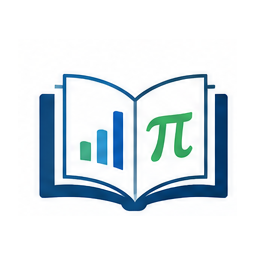
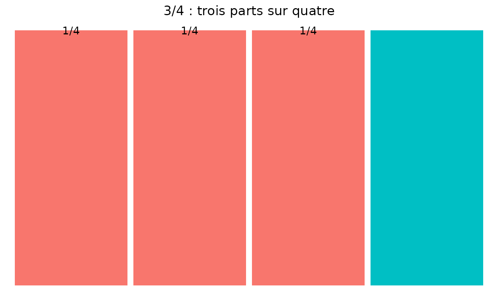
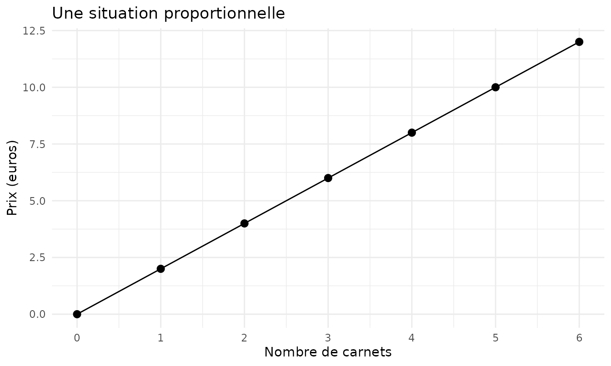
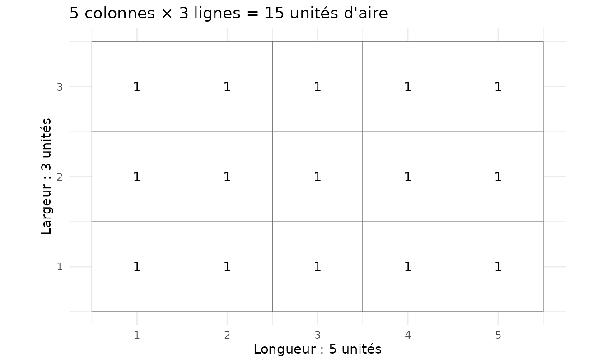
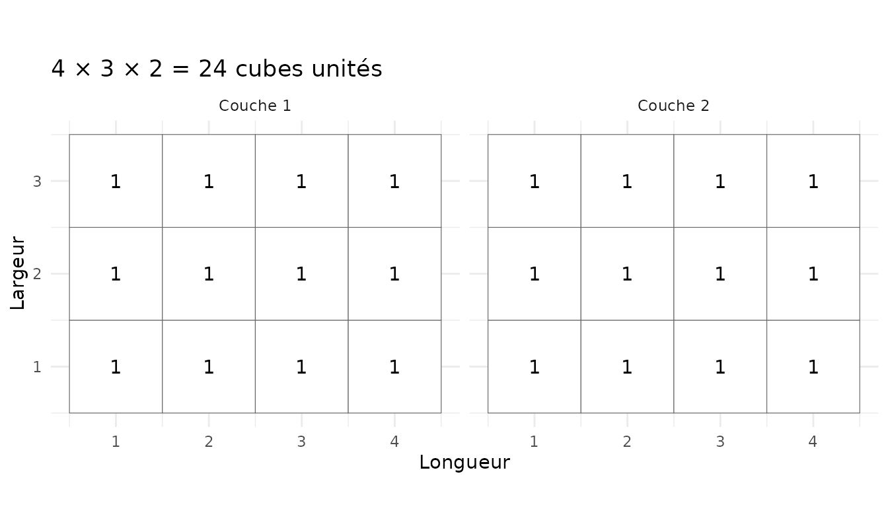
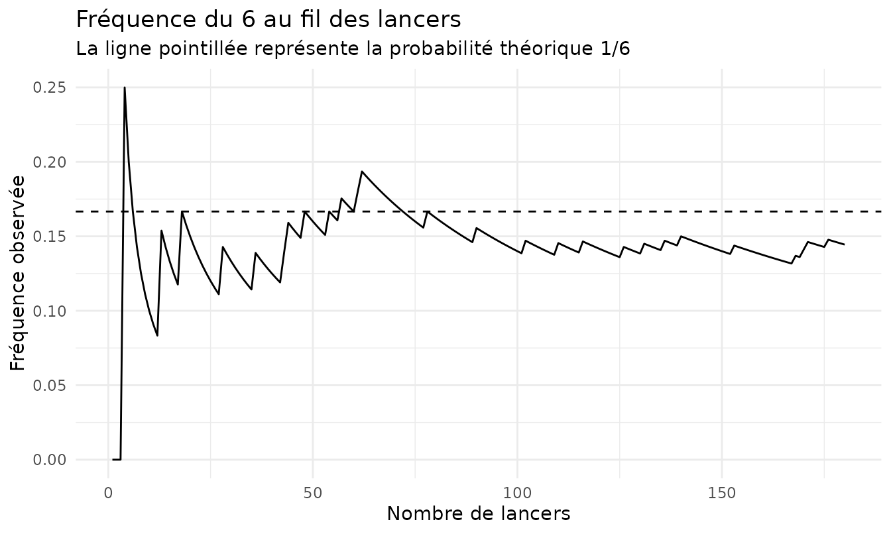

Mathématiques 6e - Fiche essentielle
fiche-mathematiques-6e.Rmd
Cette fiche rassemble les repères essentiels de mathématiques de 6e. Elle ne cherche pas à remplacer le cours : elle sert à retrouver rapidement les notions, formules et réflexes à maîtriser, puis à voir quelques idées qui deviennent plus simples lorsqu’elles sont représentées.
Le contenu est aligné sur le programme officiel de mathématiques du cycle 3, en vigueur en 6e depuis la rentrée 2025-2026.
Les repères essentiels
Nombres et calcul
Savoir lire écrire comparer et ordonner des nombres entiers ou décimaux. Estimer l’ordre de grandeur d’un résultat et respecter les priorités de calcul.
Repérage et solides
Savoir lire les coordonnées d’un point se repérer sur un plan reconnaître cube et pavé droit et relier un solide à certaines de ses représentations planes.
Réflexes
Avant de calculer identifier les données utiles choisir l’opération et vérifier l’unité. Après le calcul contrôler le signe l’ordre de grandeur et la cohérence de la réponse.
Fractions et pourcentages
Une fraction représente un quotient. Un pourcentage est une fraction sur 100.
\frac{a}{b}=a\div b \quad t\%=\frac{t}{100}
Proportionnalité
Dans une situation proportionnelle on peut multiplier les deux grandeurs par le même nombre ou revenir à l’unité. Toujours écrire les unités dans le tableau.
Périmètres
Le périmètre est la longueur du contour. Pour un disque utiliser le diamètre d ou le rayon r.
P_{rectangle}=2(L+l) \quad P_{carre}=4c \quad P_{disque}=\pi d=2\pi r
Aires
L’aire mesure une surface. Les unités d’aire sont au carré.
A_{rectangle}=L\times l \quad A_{carre}=c^2
Géométrie
Dans un triangle la somme des angles vaut 180 degrés. La médiatrice d’un segment est perpendiculaire au segment et passe par son milieu. Un point de la médiatrice est à égale distance des deux extrémités.
Volumes et durées
Un volume peut se mesurer en cubes unités comme le cm³. Pour un pavé droit on multiplie longueur largeur et hauteur. Pour un cube les trois dimensions sont égales. Repères utiles : 1 dm³ = 1 L et 1 cm³ = 1 mL. Pour les durées : 1 h = 60 min et 1 min = 60 s.
V_{pave}=L\times l\times h \quad V_{cube}=c^3
Données et probabilités
Savoir lire et produire un tableau ou un graphique. Une probabilité est comprise entre 0 et 1. En équiprobabilité elle compare les cas favorables aux cas possibles. Une fréquence observée sur de nombreuses répétitions peut aider à estimer une probabilité.
P(A)=\frac{nombre\ de\ cas\ favorables}{nombre\ de\ cas\ possibles}
Voir pour comprendre
Les graphiques suivants ne sont pas là pour décorer la fiche. Ils montrent pourquoi certaines règles fonctionnent. Une formule est plus facile à retenir lorsqu’elle a d’abord eu une raison d’exister.
Une fraction représente une part d’un tout
Pour visualiser \frac{3}{4}, on partage une unité en quatre parts égales et on en retient trois.

À retenir : le dénominateur indique en combien de parts égales l’unité est partagée ; le numérateur indique combien de parts sont considérées.
La proportionnalité conserve le même rapport
Si 1 carnet coûte 2 euros, alors 2 carnets coûtent 4 euros, 3 en coûtent 6, etc. Les points sont alignés avec l’origine : le prix est toujours obtenu en multipliant la quantité par 2.

Piège classique : une situation qui augmente n’est pas forcément proportionnelle. Il faut conserver le même rapport entre les deux grandeurs.
L’aire d’un rectangle compte des carrés unités
Un rectangle de 5 unités sur 3 contient 5 carrés sur chaque ligne et 3 lignes : 5 \times 3 = 15 carrés unités.

C’est ce dénombrement qui conduit à :
A_{rectangle}=L\times l
Le volume compte des cubes unités
Prenons un pavé droit de longueur 4, largeur 3 et hauteur 2. Chaque couche contient 4\times3=12 cubes. Deux couches donnent donc 24 cubes unités.

On généralise alors :
V_{pavé}=L\times l\times h
Pour un cube de côté c, les trois dimensions sont égales :
V_{cube}=c^3
Repères utiles : 1\,dm^3=1\,L et 1\,cm^3=1\,mL.
Une fréquence expérimentale peut se stabiliser
Une probabilité théorique décrit ce que l’on attend. Une fréquence décrit ce que l’on observe. Lorsqu’on répète beaucoup une expérience aléatoire, la fréquence peut se rapprocher de la probabilité théorique.

À retenir : sur peu d’essais, la fréquence peut beaucoup varier. Répéter l’expérience permet d’observer sa stabilisation progressive.
Les réflexes à garder
- Écrire les unités et vérifier qu’elles sont cohérentes.
- Estimer l’ordre de grandeur avant ou après un calcul.
- Pour une aire, penser en carrés unités ; pour un volume, en cubes unités.
- Pour une fraction, identifier le tout avant de compter les parts.
- En proportionnalité, vérifier que le même multiplicateur relie les valeurs.
- En géométrie, faire une figure aide à raisonner mais ne remplace pas une propriété.
- En probabilités, distinguer la probabilité théorique de la fréquence observée.
Une formule n’est pas une incantation. Si elle semble tomber du ciel, le dessin juste au-dessus mérite probablement un deuxième regard.
Retour à l’index des fiches de mathématiques
Pour produire cette fiche depuis R :
revision = generer_essentiel("6E")
produire_revision(revision, "revision_6e", format = "pdf")